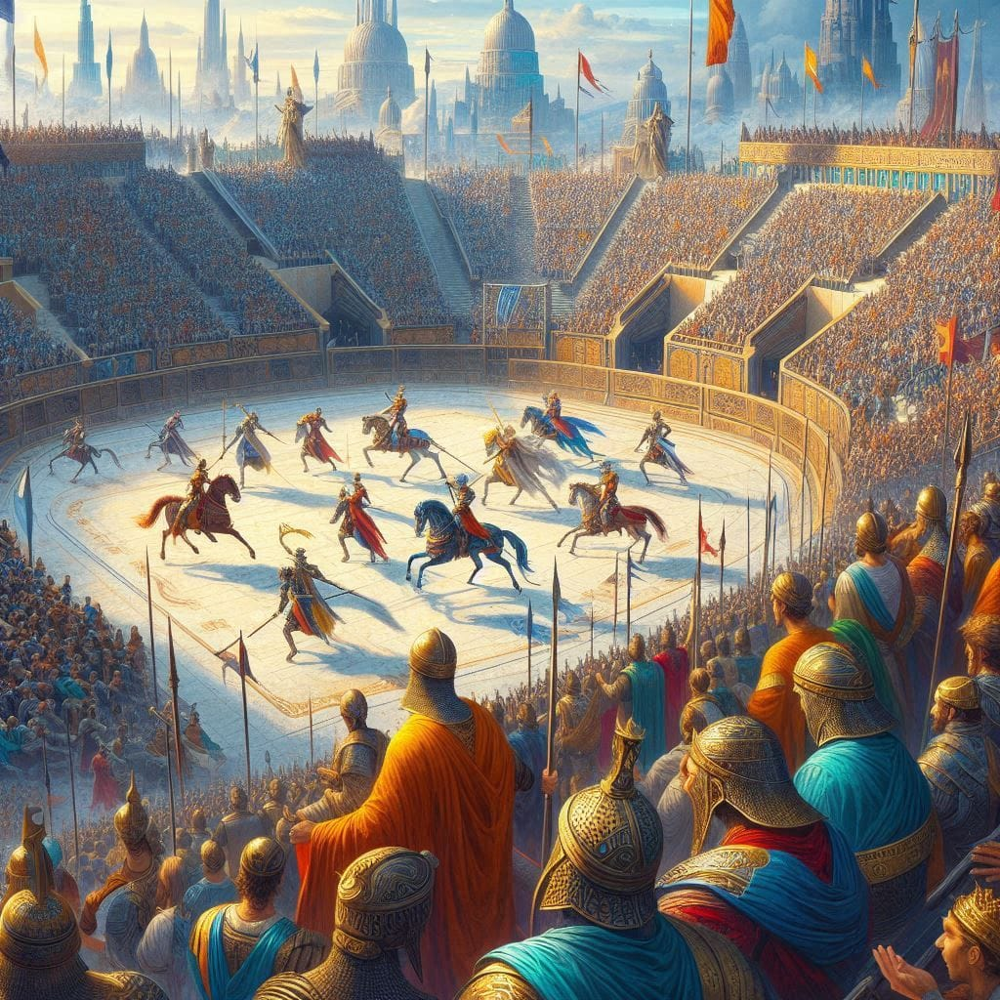
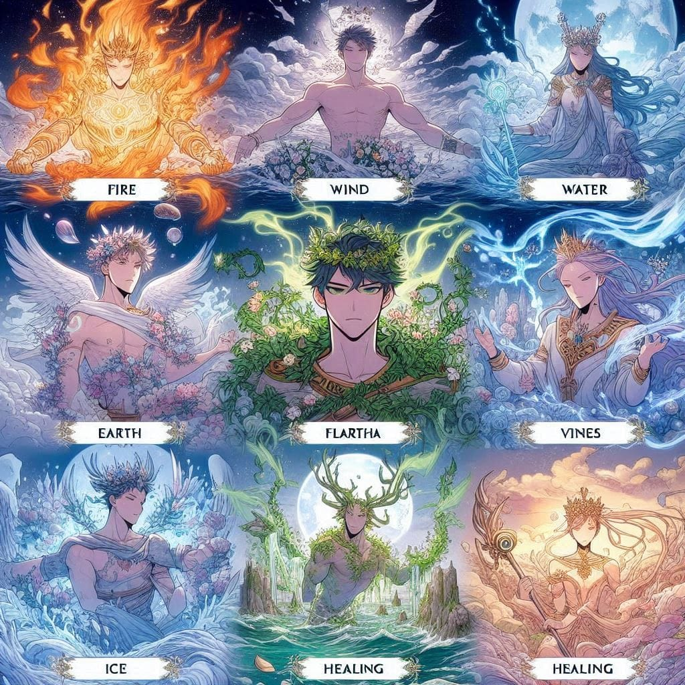
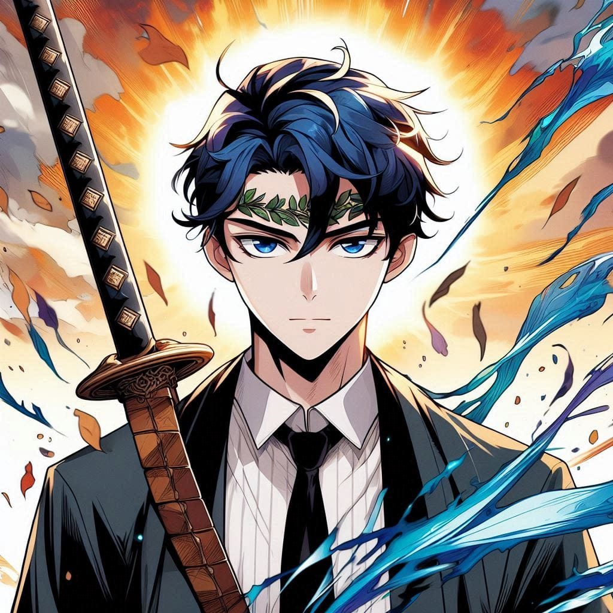

Trumpets sounded—pepepe pe pepepe—followed by a thunderous wave of cheering and applause. The grand arena was alive with anticipation. This was no ordinary event; it was the competition of combat skills, a spectacle witnessed by the rulers of over ten empires. Each empire brought their champions, ready to display their strength and honor their unique cultures and etiquettes. At stake was not only the coveted title of the highest-ranking knight but also the rare privilege of training under Saintana, the sword master and the revered ruler who governed all ten empires with unmatched wisdom and strength.
The empires were each gifted with a distinct magical affinity: fire, wind, water, earth, flora, vines, ice, weather, healing, and raw muscular strength. It mattered not if one was a commoner or an aristocrat, a man or a woman. Saintana herself, the epitome of strength and grace, stood as living proof that greatness transcends gender. A woman of unparalleled skill, she held the title of first citizen across the empires and commanded universal respect.

This year, the tournament expanded to include
participants from new empires wielding abilities of white magic, dark
magic, and aura mastery. The stakes were higher than ever. The drum of
commencement resounded, struck by Saintana herself, infusing the crowd
with electrifying energy.
Round by round, contestants clashed, their
numbers dwindling until only two remained: a weather manipulator and an
aura master named Deaus. The final battle was intense, a dance of skill
and raw power, but in the end, Deaus emerged victorious. The crowd erupted
as Deaus approached the stage to receive his prize from Saintana. Yet,
instead of gratitude, his arrogance got the better of him. Unaware of
Saintana's true stature and blinded by his meteoric rise, he refused to
accept the prize from her, citing her gender as a reason. In his
ignorance, he claimed her position was due to favoritism from the rulers.
His audacity silenced the arena, turning cheers into whispers of disbelief
and outrage. The knight order moved to subdue him, but a commanding voice
cut through the tension. It was Saintana, calmly accepting his challenge
for a duel.
Who was Saintana? Why did everyone revere her? Why was she the
highest authority, the one whose approval no ruler dared to act without?
To understand this, one must go back ten years.
Saintana first appeared
in the Saintaira Empire, known for its healing magic, as a 19-year-old
girl drenched in blood from head to toe. She had silver hair that
shimmered like moonlight and piercing purple eyes. Her flawless, glossy
skin, long lashes, and rosy lips marked her as a vision of beauty. Yet her
cold, emotionless gaze sent shivers down spines. She was an enigma, a
devil-like presence wrapped in human form. She revealed nothing of her
past or the origin of the blood that covered her. But her actions spoke
louder than words. She possessed knowledge far beyond anyone’s
comprehension—advanced medicine, combat techniques that humbled the finest
knights, and mastery over nature itself. Her capabilities seemed almost
inhuman. Her speed rivaled that of a leopard, her vision as sharp as an
eagle's, and her hearing unmatched. Some whispered she was the
reincarnation of a devil, yet her warm demeanor toward commoners and her
ability to mediate peace among nobles silenced even the harshest critics.
Saintana’s contributions were unparalleled. She trained knights in
advanced combat, brokered treaties, and brought prosperity wherever she
went. Her brilliance and fairness earned her the unanimous approval of the
ten empires, and at just 25 years old, she ascended to her position as the
supreme ruler and protector of all.
The Duel As Deaus stood before her, exuding arrogance, the crowd’s anticipation turned into a tense silence. Saintana, now 29 years old, stepped forward. Her silver hair glinted in the sunlight, her eyes cold and calculating. She did not raise her voice or display anger. Her presence alone silenced the whispers and reminded all who she was. “You have challenged me,” she said, her voice steady. “I ACCEPT.” The arena transformed into a battleground.
